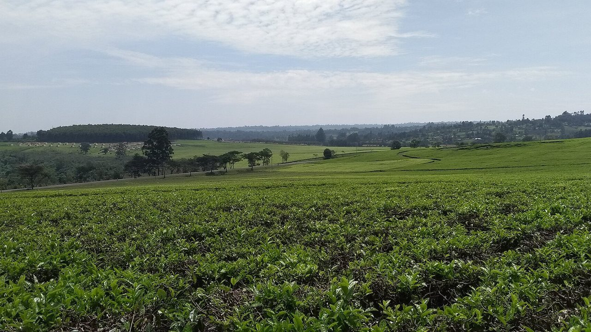

Race, Iten, Kenya

Behind
Best +0:01
371W
Target 418 W-47 W
- Cadence
- 87rpm
- Heart
- 140bpm
- Speed
- 26.5km/h
Work5 of 14
9:15
Next: · 3:00 at level 22
+0.1%
86 m climbed
5.61 km
19
Resistance / 32
Solo races your best-time ghost: position reads Ahead or Behind, and solo alone gets a Pause button. Frozen at 12:45.